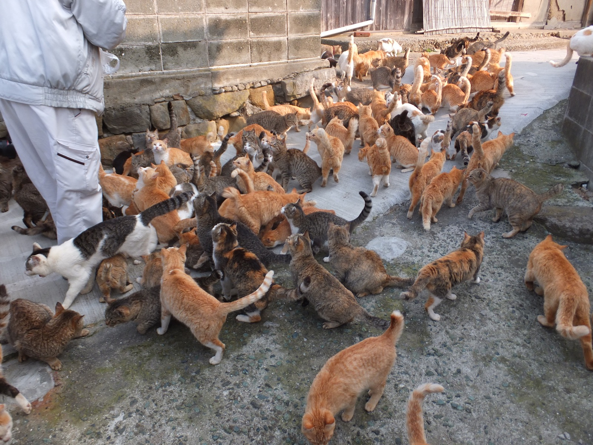
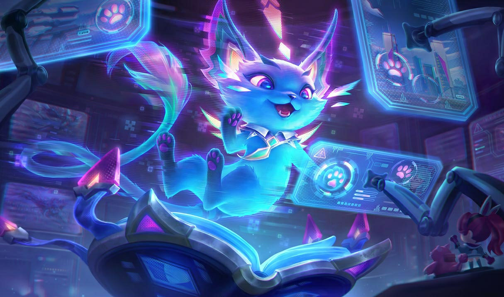
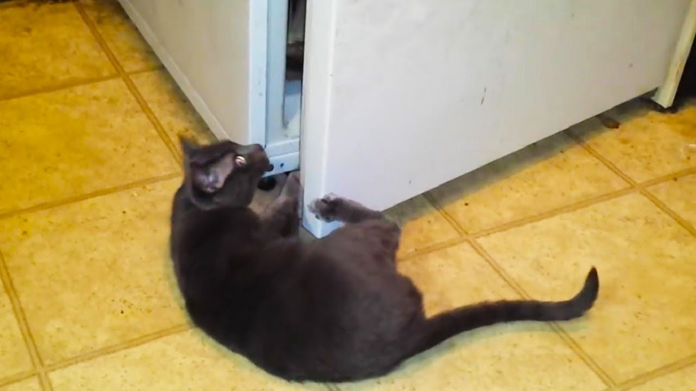

1️⃣ Коти захопили невелике село у Франції
Жителі містечка Шато-Мяу (фр. Château Miaou) прокинулися і виявили, що їхнє село захоплене бандою котів. Вони влаштували барикади з подряпаних диванів і вимагають безлімітного доступу до ласощів.
2️⃣ Вчені розшифрували котячу мову – і дарма
Група лінгвістів змогла перекласти понад 100 котячих звуків. Після оприлюднення дослідження всі коти планети синхронно образилися і тепер ігнорують своїх господарів.
3️⃣ AI-нейромережа визнала котів володарями світу
Новітній штучний інтелект, навчаючись на мільярдах фотографій, дійшов висновку, що саме коти керують людством. Після цього нейромережа припинила обробку будь-яких запитів, які не містять слова "кішечка".
4️⃣ Кіт із Британії отримав титул лорда та місце в парламенті

Завдяки бюрократичній помилці кіт на прізвисько Сер Лапан Вусатий став членом Палати лордів. Депутати зазначають, що його голосування найпослідовніше – він завжди лягає на потрібні документи.
5️⃣ Коти навчилися відкривати холодильники – світ у небезпеці!
Останні дослідження показують, що коти почали розуміти принцип роботи дверцят холодильника. Експерти прогнозують дефіцит ковбаси та молока вже до кінця року.
Будьте пильними! Ваша кішка вже щось задумала… 😼